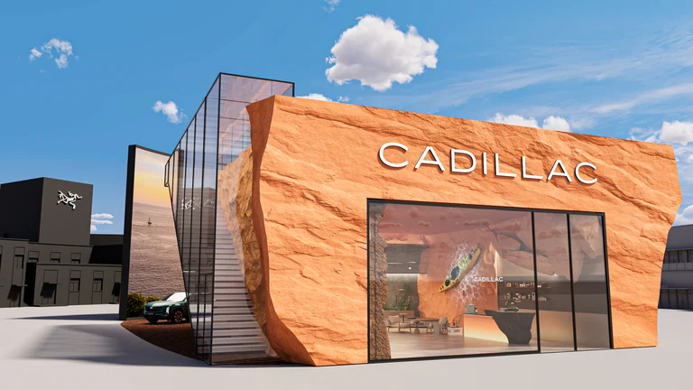
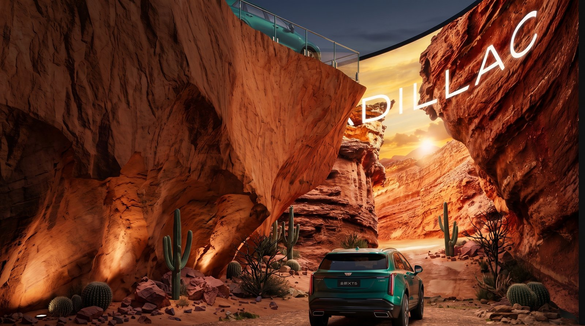
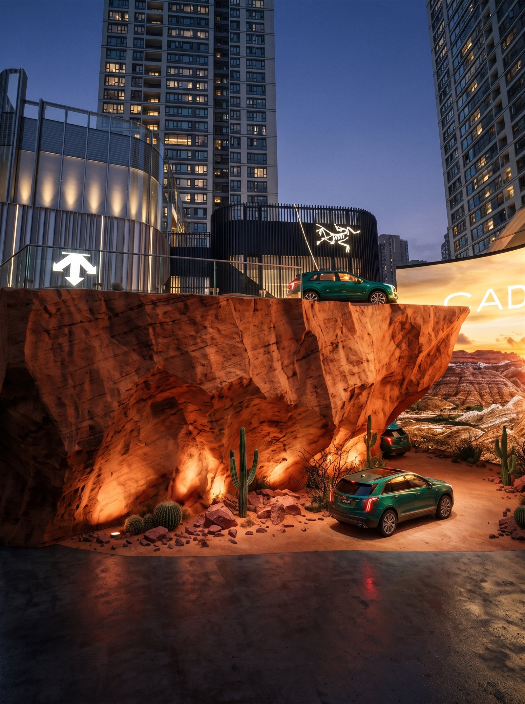
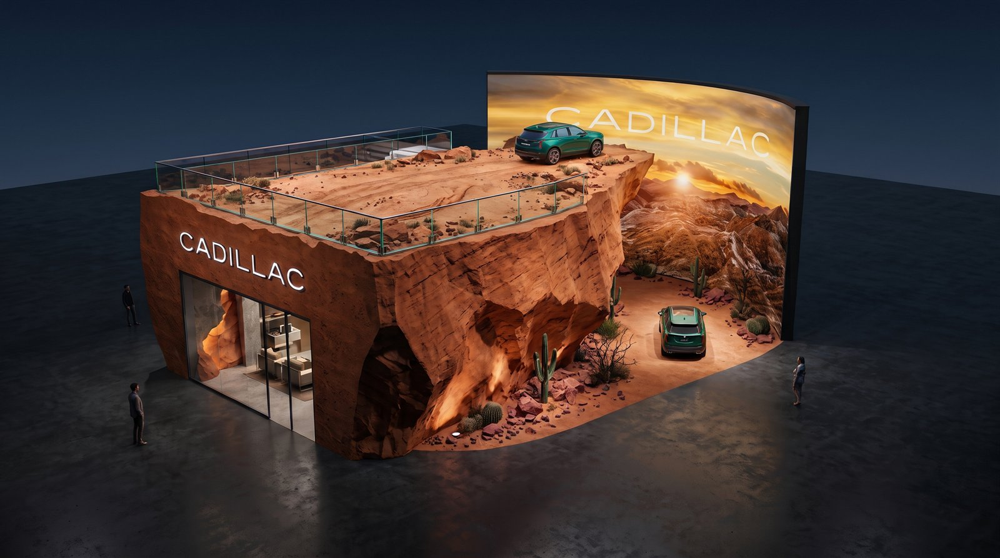
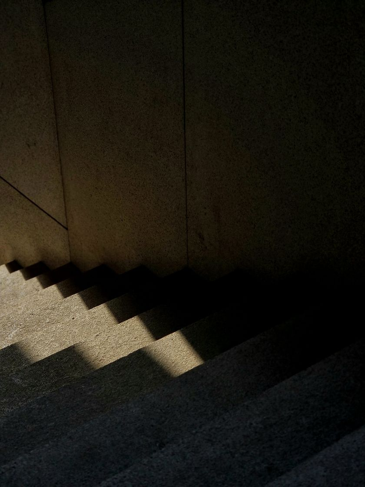
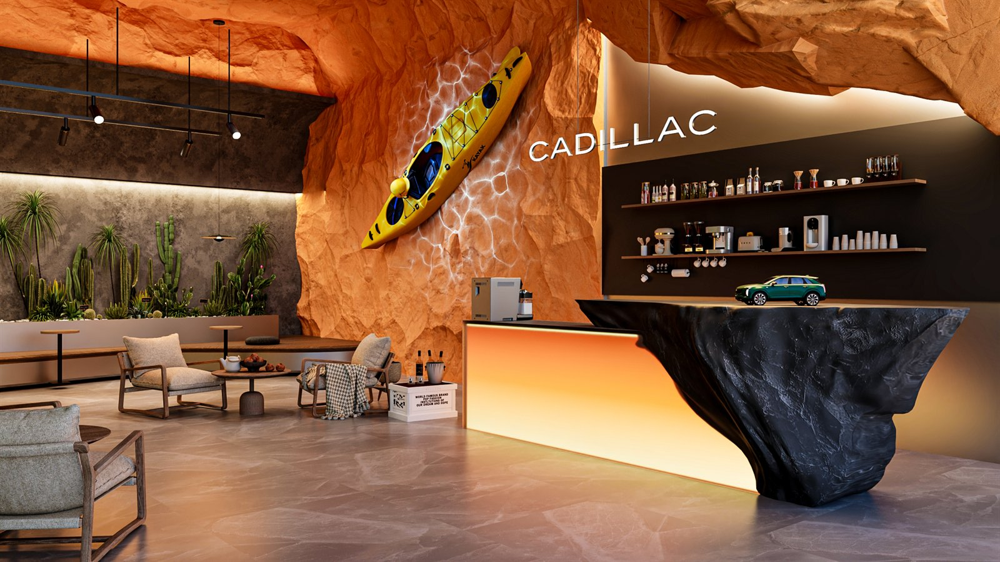

XT5 创意外展

外展空间 · 入口夜景方案渲染 · 后期成片
设计灵感
峡谷地貌是这套外展的设计灵感。两侧岩壁围出一条向内收窄的谷道，展车分置谷底和屋顶，观众先沿岩壁走近车身，再循外侧楼梯登高看车。
入口 · 日夜

外展空间 · 日景方案渲染
岩壁与展车
两侧岩壁收窄视线，车身位于谷道尽头，后方弧屏延伸地貌。

车辆与岩壁方案渲染 · 后期成片

谷底展车 · 反向视角方案渲染 · 后期成片

谷底展区 · 竖幅方案渲染 · 后期成片

羚羊谷岩壁地貌参考
对照左侧谷底展区，岩壁沿车身两侧收拢，斜光照出转折处的层理。
Vitaly Kushnir · Pexels从谷底到屋顶
从谷底看，两侧岩壁把视线引向展车。登上屋顶，另一辆车出现在弧屏前，车身轮廓和屏上的山脊一同进入视野。

整体空间 · 鸟瞰方案渲染 · 后期成片
屋顶展示与楼梯

屋顶展示与楼梯
设计灵感
沿岩壁看车
岩壁围出谷底展车，旁侧楼梯把视线带向屋顶。两台车借同一片地貌，在不同高度进入视野。

对照本组楼梯方案渲染，斜光把台阶前缘与暗部区分开。
弧屏变景


谷底弧屏 · 暖金方案
室内展示与接待
接待区的座席贴着岩壁排开。视线越过桌椅，落在灯光勾出的吧台和陈列架上。

室内休息与接待方案渲染

室内底盘展示方案渲染
平直的深色背板承托底盘总成。沿上缘掠过的暖光，把背板与粗糙岩面分开。

材质参考 · 对照背板边缘被暖光照出的岩面纹理。
Alfo Medeiros · Pexels完整图集
14 张 · 点图放大